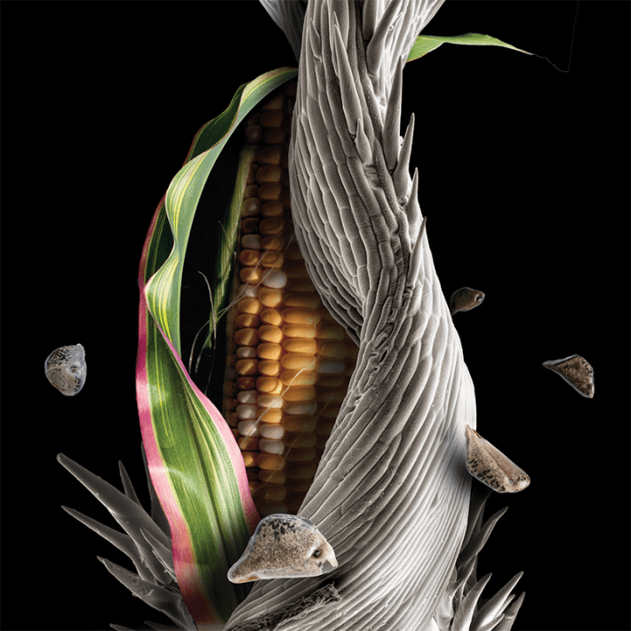
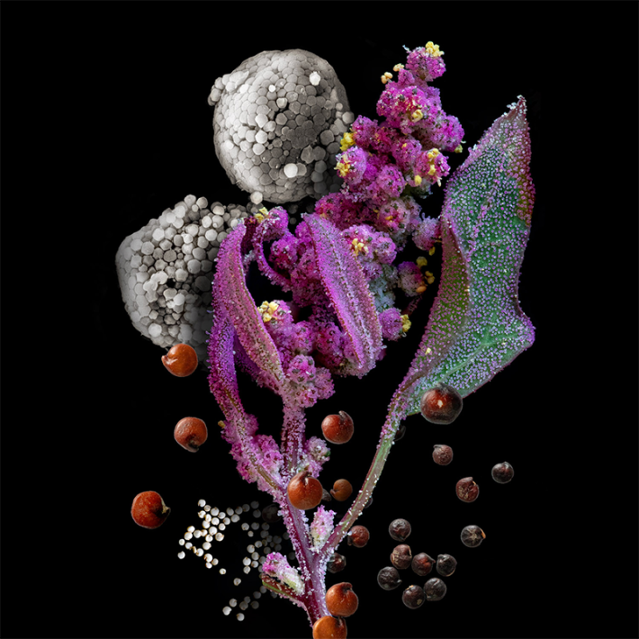
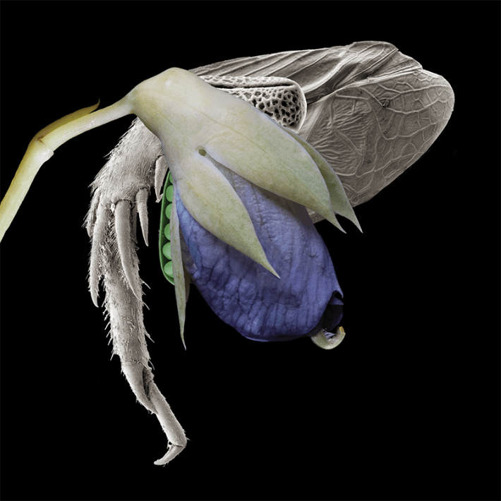
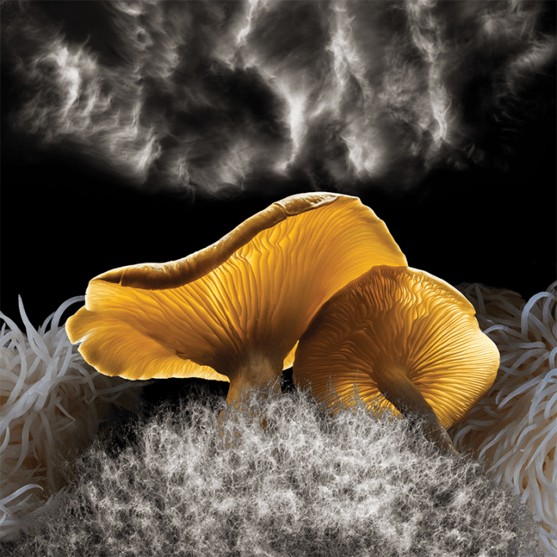

For photographer and author Robert Dash, food is more than a simple pleasure or a source of nutrients. It’s an inspiration and the main character in an important story he wants to tell about the planet. In his recent book, Food Planet Future: The Art of Turning Food and Climate Perils Into Possibilities, Dash seeks to give people a deeper understanding of the food we find in our grocery carts and on our plates, and how its cultivation impacts the Earth.
Dash has spent decades educating others about biology, natural history, and ecology as a secondary school teacher and naturalist. These are the subjects that have also caught his photographer’s eye over the years. His first book, On An Acre Shy of Eternity: Micro Landscapes at the Edge, was a three-year photographic study of a small pocket of land on one of the San Juan Islands, off the coast of Washington, where Dash lives. In Food Planet Future, he set his sights on agriculture.
Agriculture is one of the most destructive activities ever practiced by humans on the planet.
Using a scanning electron microscope, Dash captures the intricacies of tiny seeds, spores, and scales at the micro level, revealing unexpected shapes and patterns. With a digital camera, he photographs recognizable features of popular foods, ones familiar to the naked eye. Dash then creates mashups of his creations, uncanny compilations that juxtapose distinct levels of scale. Each image is paired with a story that narrates the relationship it has to our tangled global crises of food security, climate change, and biodiversity loss, and to the regenerative strategies that could help pull us back from the brink.
I recently spoke with Dash about the poetry in scientific facts, the artistic appeal of montage, and the role agriculture could play in conservation.
What made you want to create Food Planet Future?
I have absolutely been fascinated by the art of plants over time, and the spectacular service that they provide for us by making life possible. My first book was about all the layers of beauty I could find in one small plot of land, three quarters of an acre, where we live. I found access to a scanning electron microscope and was looking at seeds, feathers, and pollen, among other things. While attending portfolio reviews, someone suggested that I look at food using the same scanning electron microscope approach.

CORN: This montage blends the familiar (color photographs) with the hidden (black and white photos and scanning electron micrographs). The seeds orbiting the corn are crop wild relative kernels of corn—the original seeds to which all of today’s varieties are related. Genes from these wild plants may help crops become more resilient to heat, drought, and disease. MACRO: Bicolor corn, Japonica striped corn, Zea mays, leaf, crop wild relative kernels, Zea diploperennis. MICRO: Corn tassel, 400x. Credit: Robert Dash.
I began looking for patterns and textures in food that would make my jaw drop. The second part was: Did that food have a climate story? The climate story was often that things are falling apart. But, as I looked further, I saw stories that were positive and regenerative, stories that were helping heal the climate issues.
How did you choose the subjects for this book?
I have a lot of friends who grow food, and some of them are very experimental, like growing rice in the northwest and in the San Juan Islands. Many of them provided sample foods. Also, I would come upon something common in the store and just ask the question, “What is the climate story of this food?” When there was a very clear climate story—especially one with a tie to rebuilding soil, reducing food waste, or helping capture carbon—and it had a beautiful texture or pattern to it, I chose those to look more closely.
Do you have a favorite image from the book?
I really like the quinoa image. When I first saw the inside of a quinoa seed with the microscope, I was absolutely stunned by the starch granules, which look almost like soccer balls. And then the leaf itself has these phenomenal trichome structures that are so gorgeous and surprising, and you'd never know about them if you didn't look closely. The backstory of that one is that a researcher came from Rwanda. As a child he had been in refugee camps where he nearly starved. He came and got his Ph.D. at the research station in Washington state where I took that quinoa image. He brought that quinoa back to Rwanda and introduced it to farmers all over East Africa. Things like that are mind blowing. Not just the absolute beauty of what we're looking at, but also the human consequences of studying and sharing that kind of resource.

QUINOA: A pseudo-grain, quinoa is promoted as a climate-smart food. It can thrive in dry, harsh climates, making it well suited for a warming world. Unlike most plants, it does well in salty soils, which is especially important given salt intrusion on coastal lands with sea level rise. MACRO: Quinoa, Chenopodium quinoa; leaves, seeds, and flower head MICRO: Quinoa starch granules: 2,000x 2023. Credit: Robert Dash.
Why is the agricultural focus important to you?
Agriculture is one of the most destructive activities ever practiced by humans on the planet. I have grounded my photography over decades in wilderness and nature, with a great interest in conservation and preservation. If anybody's interested in conservation and preservation, they must be interested in agriculture. It is in our lives, all day, every day. We all think about food constantly, but we don't necessarily think about how it's being grown and how that is impacting the rest of our lives, through drought, fires, floods. The themes were so big and so fascinating, it just felt like an incredible place to explore artistically, scientifically, and environmentally.
How did you become interested in photography?
I started decades ago as a kid with a camera. There's a magic in being able to see something reflected in our vision, a product that surprises us and excites us or teaches us something new. It's almost like going fishing. When you go out with a camera, you wonder what you're going to catch. Are you going to find a moment of light, of wonder, of surprise? So much of photographing nature is that there are things you can see with a camera or a particular lens that you can't see with the naked eye. I often go back and enlarge something and study it and find shapes or colors or structures that I had no idea were there. Besides just pure inspiration, it can also lead to further study and awareness.

CRICKET AND PEA PROTEIN: Many Western countries are pursuing alternative forms of dietary protein for humans, pets, and livestock, including insects such as crickets, mealworms, and black soldier fly larvae—as well as plants such as peas and beans. Insect protein can be produced using a small fraction of the land, water, and energy used for animal protein; and it generates a small fraction of the methane. Substituting insect protein for fish protein in pet food and fishmeal can also help reduce pressure on ocean fish populations. MACRO: Garden pea, Pisum sativum; flower. MICRO: Garden pea pollen: 4,000x; cricket leg: 90x; wing: 24x. Credit: Robert Dash.
Your photographs combine micro and macro images, taken with a scanning electron microscope and a digital camera, respectively. What appeals to you about montage?
I'm really fascinated by the idea of a conversation between macro and micro, black and white and color, fact and metaphor, humor and seriousness. It’s a challenge to have these elements work together, to create balance, where the elements talk to each other in a way that doesn't feel contrived. To create these montages that have all these different layers, it echoes the theme itself that has so many layers. You're looking at something that you haven't seen before, and with these combinations that are imaginary but also hyper real.

MUSHROOM: Fungal and mycelial networks support healthy soil, plant growth, and remarkably, contribute to rainfall. Trillions of fungal spores released into the air (bioaerosols) act as nuclei for the formation of large raindrops in clouds. MACRO: Wine cap mycelium, Stropharia rugosoannulata, lion’s mane, Hericium erinaceus, golden oyster, Pleurotus citrinopileatus, cloud. Credit: Robert Dash.
As a teacher, what role do you think combining art and science can play in outreach and education?
Both are about exploration, curiosity, and fascination. Scientific facts to me, are poetic. You think about a seed becoming a 300-foot redwood and then the redwood turning back into soil. Those are facts but imagine the mystery and the miracle that those things can happen. I've often felt the more I learn scientific facts, the more fascination, curiosity, and wonder there is. As an educator, when we're excited about something and dedicated to something, it becomes imperative to express it and communicate it in some way. And art can be a wonderful way to do that. 
Images from Food Planet Future will be on display at the Bioneers Conference 2025, March 27-29, in Berkeley, California. For more information about Dash’s work, visit www.robertdashphotography.com.
Lead photo: Robert Dash with an image of Azolla from his traveling exhibition. Giant blooms of Azolla, an aquatic fern that resembles moss, blanketed Arctic seas 50 million years ago, and these blooms are credited with gobbling up massive quantities of atmospheric carbon dioxide, contributing to cooling of the planet. High in protein and minerals, Azolla is used today in livestock feed and is considered a potential food source for humans. Credit: Robert Dash.